Cs qs
第一章
1. 给出以下概念的解释说明
- 中央处理器（CPU）
点击查看详细
计算机的核心部件，由 算数逻辑部件、控制部件和寄存器组 等组成，执行程序指令，处理和运算数据，控制各部件协调工作
- 算数逻辑部件（ALU）
点击查看详细
CPU 的组成部分，负责执行算数和逻辑运算
- 通用寄存器组（GPRs）
点击查看详细
CPU 内部用于暂时存储数据和地址的一组寄存器
这些寄存器具有较快的访问速度，CPU 在进行运算和数据处理时，通常会先将数据从内存读取到通用寄存器中，然后在寄存器之间进行操作，最后再将结果写回内存或其他寄存器。
- 控制器（CU）
点击查看详细
CPU 的组成部分，负责取指令、译码并发出控制信号，协调各部件工作
- 程序计数器(PC)
点击查看详细
存储下一条要执行的指令的地址。
在程序执行过程中，CPU 会根据 PC 的值从内存中取出相应的指令，然后 PC 的值会自动加 1（对于顺序执行的指令），指向下一条指令的地址。如果遇到跳转指令，PC 的值会被修改为跳转目标的地址。
- 指令寄存器(IR)
点击查看详细
暂时存储当前正在执行的指令。
当 CPU 从内存中取出一条指令后，会将该指令放入指令寄存器中，然后控制器会对指令寄存器中的指令进行译码，以确定该指令要执行的操作。
- 主存储器(MM)
点击查看详细
计算机用于暂时存储正在运行的程序和数据的部件。
主存储器的特点是 访问速度相对较快，但 容量相对较小。计算机在运行程序时，会将程序和数据从外部存储设备（如硬盘）加载到主存储器中，CPU 直接从主存储器中读取指令和数据进行处理。
- 总线
点击查看详细
计算机各部件之间进行数据传输和通信的公共通道。
它由一组导线和相关的控制电路组成，根据其传输的信息类型可以分为数据总线、地址总线和控制总线。数据总线用于传输数据，地址总线用于传输内存地址，控制总线用于传输控制信号。
- 应用软件
点击查看详细
为满足用户特定需求而开发的软件。
- 系统软件
点击查看详细
管理和控制计算机硬件与软件资源的软件。
- 高级编程语言
点击查看详细
接近人类自然语言和数学表达式的编程语言。
- 汇编语言
点击查看详细
使用助记符表示机器指令的面向机器的低级编程语言。
汇编语言与计算机的硬件结构密切相关，每条汇编指令都对应着一条机器指令。汇编语言编写的程序需要通过汇编程序将其转换为机器语言程序才能在计算机上运行。
- 机器语言
点击查看详细
计算机能够直接识别和执行的二进制代码。
机器语言是计算机硬件唯一能够理解和执行的语言，其他高级语言编写的程序最终都需要转换为机器语言才能在计算机上运行。
- 机器级语言
点击查看详细
与计算机硬件直接相关的语言，包括机器语言和汇编语言。
机器级语言能够直接控制计算机的硬件资源，执行效率较高，但编程难度较大。
- 源程序
点击查看详细
程序员使用高级语言或汇编语言编写的程序。
源程序是一种文本文件，其中包含了程序员编写的代码。源程序需要经过编译、汇编或解释等处理才能转换为计算机能够执行的目标程序。(我们写的.c文件)
- 目标程序
点击查看详细
源程序经过编译或汇编后生成的机器语言程序。
目标程序可以直接在计算机上运行，它包含了计算机能够识别和执行的指令序列。(我们运行的.exe文件)
- 编译程序
点击查看详细
将高级语言编写的源程序一次性全部转换为目标程序的程序。
编译过程通常包括词法分析、语法分析、语义分析、代码生成和优化等阶段。编译完成后，生成的目标程序可以独立运行，执行效率较高。
- 解释程序
点击查看详细
逐行解释并执行高级语言源程序的程序。
解释程序在运行时，会对源程序的每一行代码进行解释，将其转换为机器语言指令并立即执行。解释程序不需要生成目标程序，程序的执行过程是边解释边执行，执行效率相对较低，但具有较好的交互性和可移植性。
- 汇编程序
点击查看详细
将汇编语言编写的源程序转换为机器语言目标程序的程序。
汇编程序会将汇编语言中的助记符转换为对应的机器指令，生成可在计算机上运行的目标程序。
- 最终用户
点击查看详细
使用计算机系统或软件完成特定任务的人员。（玩电脑的）
- 系统管理员
点击查看详细
负责管理和维护计算机系统的专业人员。（就是我们）
- 应用程序员
点击查看详细
专门从事应用软件编写和开发的人员。(也是我们)
- 指令集体系结构(ISA)
点击查看详细
计算机系统的抽象模型，定义了计算机硬件和软件之间的接口。
ISA 规定了计算机能够执行的指令集、指令的格式、寄存器的组织、内存寻址方式等。不同的计算机系统可能具有不同的 ISA，软件的可移植性通常与 ISA 密切相关。
- 微体系结构
点击查看详细
计算机硬件的具体实现方式。
它是在指令集体系结构的基础上，对计算机的各个部件（如 CPU、内存、总线等）进行具体的设计和实现。微体系结构关注的是如何提高计算机的性能、降低功耗等问题，不同的微体系结构可以实现相同的指令集体系结构。
- 透明性
点击查看详细
计算机系统中某些特性或功能对用户不可见。
例如，操作系统对内存的管理对用户是透明的，用户只需要使用应用程序，而不需要关心操作系统是如何分配和管理内存的。
- 吞吐率
点击查看详细
计算机系统在单位时间内能够处理的任务数量或数据量。
它是衡量计算机系统性能的一个重要指标，通常用每秒处理的任务数、数据量（如字节/秒）等来表示。
- 用户 CPU 时间
点击查看详细
用户程序在 CPU 上实际执行的时间。
不包括系统调用、等待 I/O 等时间。它反映了 CPU 为用户程序服务的时间，是衡量程序执行效率的一个重要指标。
- 系统性能
点击查看详细
计算机系统在完成各种任务时所表现出的综合能力。
它包括多个方面的指标，如吞吐率、响应时间、CPU 利用率、内存利用率等。系统性能的好坏直接影响到计算机系统的使用效率和用户体验。
- 时钟周期
点击查看详细
计算机时钟信号的基本时间单位。
它是 CPU 中时钟脉冲的两个相邻上升沿（或下降沿）之间的时间间隔。时钟周期是计算机中的最小时间单位，计算机的所有操作都在时钟周期的控制下进行。
- 主频
点击查看详细
计算机 CPU 的时钟频率，时钟周期的倒数。
表示 CPU 每秒能够产生的时钟脉冲数。主频通常用赫兹（Hz）表示，如 2.0GHz 表示 CPU 每秒能够产生 20 亿个时钟脉冲。主频越高，CPU 的运算速度通常越快。
- CPI
点击查看详细
每条指令执行所需的平均时钟周期数。
它是衡量 CPU 执行效率的一个重要指标，不同的指令可能具有不同的 CPI 值，CPU 的性能不仅取决于主频，还与 CPI 有关。
- MIPS
点击查看详细
每秒执行的百万条指令数。
MIPS 的计算公式为：\(MIPS=\dfrac{指令数}{执行时间\times10^6}\)
- MFLOPS
点击查看详细
每秒执行的百万次浮点运算。
- GFLOPS
点击查看详细
每秒执行的十亿次浮点运算。
- FLOPS
点击查看详细
每秒执行的浮点运算次数。
- PELOPS
点击查看详细
每秒执行的千万亿次浮点运算。
- EPLOPS
点击查看详细
每秒执行的百亿亿次浮点运算。
2. 简单回答下面问题
- 冯.诺依曼计算机由哪几部分组成?各部分的功能是什么?采用什么工作方式?
点击查看详细
组成：运算器、控制器、存储器、输入设备和输出设备。
功能：运算器进行算术和逻辑运算；控制器是指挥中心，取出指令、译码分析并发出控制信号；存储器存储程序和数据；输入设备将外部信息输入计算机；输出设备将处理结果输出。工作方式：存储程序和程序控制。
- 摩尔定律的主要内容是什么?
点击查看详细
当价格不变时，集成电路上可容纳的晶体管数目，约每隔18 - 24个月便会增加一倍，性能也将提升一倍。
- 计算机系统的层次结构如何划分?计算机系统的用户可分为哪几类?每类用户工作在哪个层次?
点击查看详细
层次结构划分：硬件层、操作系统层、语言处理程序层、应用程序层。
用户分类及对应层次：
- 最终用户工作在应用程序层；
- 系统管理员工作在操作系统层;
- 程序员工作在语言处理程序层和应用程序层。
- 程序的CPI与哪些因素有关？
点击查看详细
与指令集架构、编译器的优化程度、硬件的实现方式、程序的特性有关。
- 为什么说性能指标MIPS不能很好地反映计算机的性能？
点击查看详细
- 指令集不同，不同指令集的指令复杂度差异大；
- 指令的执行效率不同，即使相同指令集，不同计算机执行同一条指令效率可能不同；
- 程序的特性不同，MIPS未考虑程序具体特性，不能准确反映计算机对不同程序的性能。
3. 假定你的朋友不太懂计算机，请用简单通俗的语言给你的朋友介绍计算机系统是如何工作的。
点击查看详细
计算机系统是由硬件和软件组成的：硬件包括中央处理器（CPU）、内存、硬盘等，它们相当于计算机的身体；软件则是计算机的大脑，包括操作系统、应用程序等。
当我们使用计算机时，我们通过输入设备给计算机下达指令和提供数据。计算机的CPU负责解析指令并执行相应的操作，数据存储在内存中。最后，计算机会将结果通过输出设备展示给我们。这个过程就像是我们和计算机进行了一次对话，我们给计算机下达指令，计算机按照指令进行运算，然后返回结果给我们。
4. 略
5
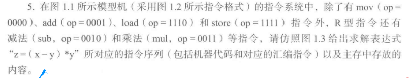
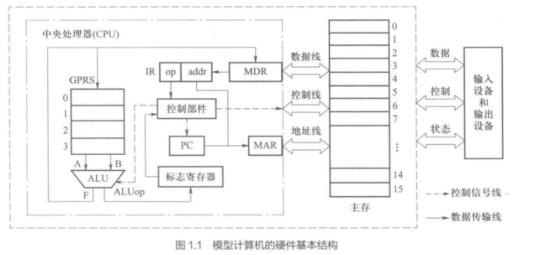 |
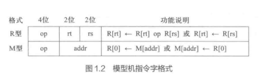 |
|---|---|
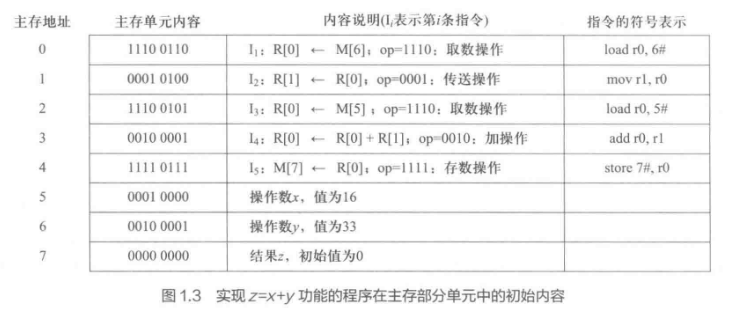
点击查看详细
| 地址 | 汇编指令 | 说明 | 机器代码 |
|---|---|---|---|
| 0 | load R0, x | 从地址编号7取数到R0 | 1110 0111 |
| 1 | mov R1, R0 | 将R0的值存放到R1中 | 0000 01 00 |
| 2 | load R0, y | 从地址编号8取数到R0 | 1110 1000 |
| 3 | sub R1, R0 | R1=x-y | 0000 01 00 |
| 4 | mul R1, R0 | R1=(x-y)*y | 0011 01 00 |
| 5 | mov R0, R1 | 为store准备 | 0000 00 01 |
| 6 | store z_addr, R0 | 将R0的存到z中 | 1111 1001 |
| 7 | x | x初始值 | |
| 8 | y | y初始值 | |
| 9 | z | z初始值 |
6
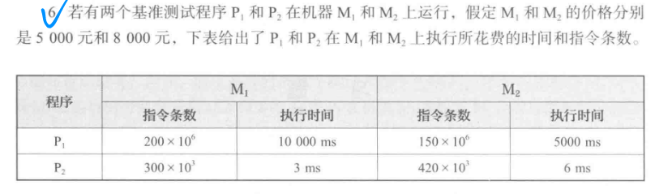
（1）对于P1,哪台机器的速度快？快多少？对于P2呢？
点击查看详细
执行时间比较：直接比较两台机器的执行时间，时间越短速度越快
M1执行时间为 10000ms；M2执行时间为 5000ms \(\Rightarrow\) M2快，快一倍
M1执行时间为 3ms；M2执行时间为 6ms \(\Rightarrow\) M1快，快一倍
（2）在 M1 上执行 P1 和 P2 的速度分别是多少 MIPS ?在 M2 上的执行速度又各是多少?从执行速度来看,对于 P2 ,哪台机器的速度快?快多少?
点击查看详细
MIPS计算：公式为**MIPS = 指令数（条） / 执行时间（秒）**，注意单位转换
| M1 | M2 | |
|---|---|---|
| P1 | \(\displaystyle \dfrac{200\times 10^6}{10}=20 \mathrm{MIPS}\) | \(\displaystyle \dfrac{150\times 10^6}{5}=30 \mathrm{MIPS}\) |
| P2 | \(\displaystyle \dfrac{300\times 10^3}{3\times 10^{-3}}=100 \mathrm{MIPS}\) | \(\displaystyle \dfrac{420\times 10^3}{6\times 10^{-3}}=70 \mathrm{MIPS}\) |
对比P2: 快了1.43倍
（3）假定 M1 和 M2 的时钟频率各是 800MHz 和 1.2GHz ,则在 M1 和 M2 上执行 P1 时的平均时钟周期数 CPI 各是多少?
点击查看详细
CPI计算：公式为 CPI = 时钟周期数 / 指令数，时钟周期数 = 执行时间（秒） × 时钟频率。
M1上的P1：\(\displaystyle \dfrac{10\times 800 \times 10^6}{200\times 10^6}=40\)
M2上的P1 \(\displaystyle \dfrac{5\times 1200 \times 10^6}{150\times 10^6}=40\)
（4）如果某个用户需要大量使用程序 P1 ,并且该用户主要关心系统的响应时间而不是吞吐率,那么,该用户需要大批购进机器时,应该选择 M1 还是 M2 ?为什么?(提示:从性价比上考虑)
点击查看详细
响应时间对应于执行时间的倒数
\(R=\displaystyle \dfrac{1}{执行时间\times 价格}\)
\(\displaystyle R_{M1}=\dfrac{1}{10\times 5000}=2\times10^{-5}\)
\(\displaystyle R_{M2}=\dfrac{1}{5\times 8000}=2\times2.5^{-5}\)
选择M2
(5)如果另一个用户也需要购进大批机器,但该用户使用 P1 和 P2 一样多,主要关心的也是响应时间,那么,应该选择 M1 还是 M2 ?为什么?
点击查看详细
响应时间同样
P1 和 P2 需要同等考虑,性能有多种方式:执行时间总和、算术平均、几何平均。
若用算术平均方式,则:因为 \((10+0.003)/2×5000 (5+0.006)/2×8000\) ,所以 M2 的性价比高,应选择 M2
若用几何平均方式,则:因为 \(\sqrt{(10×0.003)} ×5000 < \sqrt{(5×0.006)}×8000\) , 所以 M1 的性价比高,应选择 M1
7
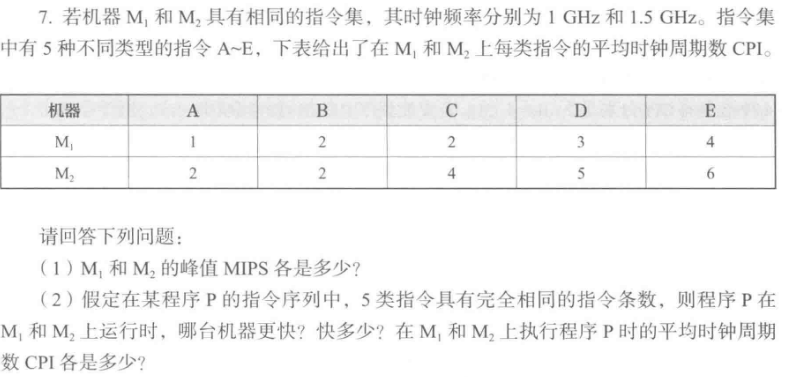
(1)\(M_1\)和\(M_2\)的峰值MIPS各是多少？
点击查看详细
\(\displaystyle MIPS=\dfrac{f}{CPI\times 10 ^6}\)，所以在f(时钟频率)相同时可以找CPI最小的指令来算 $$ \begin{align} f_{M_{1}}=&1GHz=1\times 10^9 Hz \ &CPI_A=1 \ MIPS_{M_1} &= \dfrac{1\times 10^9}{CPI_A\times 10^6}=1000MIPS \end{align} $$
$$ \begin{align} f_{M_{2}}=&1.5GHz=1\times 10^9 Hz \ &CPI_A=2 \ MIPS_{M_2} &= \dfrac{1.5\times 10^9}{CPI_A\times 10^6}=750MIPS \end{align} $$
(2)假定某程序P的指令序列中，五类指令具有完全相同的指令条数，则程序P在M1和M2上运行时，哪台机器更快？快多少？在M1和M2上执行程序P时的平均时钟周期数CPI各是多少？
点击查看详细
M1的平均CPI：\(\displaystyle \overline{CPI_{M1}}=\dfrac{1+2+2+3+4}{5}=2.4\)
M2的平均CPI：\(\displaystyle \overline{CPI_{M2}}=\dfrac{2+2+4+5+6}{5}=3.8\)
执行时间的话，假设程序P的指令条数为N，时钟周期 \(T=\dfrac{1}{f}\)
CPU执行时间=CPI×程序总指令条数×时钟周期
M1的执行时间：\(T_{M1}=CPI_{M1}\times N\times \dfrac{1}{f_{M1}}=2.4N\times 10^{-9}\)
M2的执行时间：\(T_{M2}=CPI_{M2}\times N\times \dfrac{1}{f_{M2}}=2.53N\times 10^{-9}\)
则在M1上运行更快
8
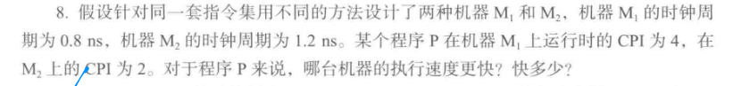
点击查看详细
执行时间
\(M_1=4N\times 0.8 =3.2N(ns)\)
\(M_2=2N\times 1.2=2.4N(ns)\)
所以 \(M_2\) 的执行速度更快，快了25%
9
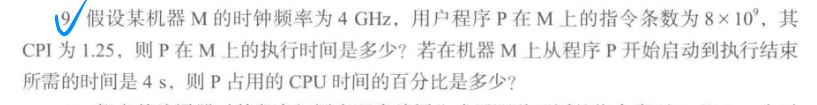
点击查看详细
P在M上的 CPU执行时间 为 \(1.25 \times (8\times 10^9)\times\dfrac{1}{4\times 10^9}=2.5(s)\)
则百分比为 \(\dfrac{2.5}{4}=62.5\%\)
10
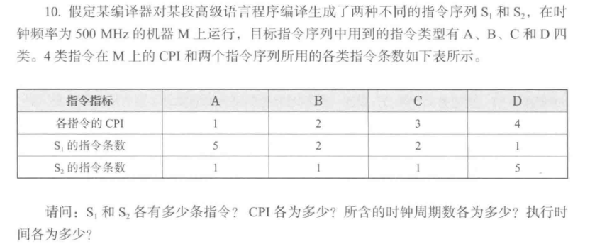
(1)\(S_1\) 和 \(S_2\) 各有多少条指令
点击查看详细
\(S_1\) 有 \(5+2+2+1=10\) 条指令；\(S_2\) 有 \(1+1+1+5=8\) 条指令
(2)CPI各为多少
点击查看详细
\(\overline{CPI_{M_1}}=\dfrac{1\times5 + 2\times 2+3\times 2+4\times1}{10}=1.9\)
\(\overline{CPI_{M_2}}=\dfrac{1\times1 + 2\times 1+3\times 1+4\times5}{8}=3.25\)
(3)所含时钟周期数各为多少
点击查看详细
\(T=CPI\times n\)
\(T_1=19\)
\(T_2=26\)
(4)执行时间
点击查看详细
S1：\(\dfrac{19}{500\times 10^6}=38(ns)\)
S2：\(\dfrac{26}{500\times 10^6}=52(ns)\)
11
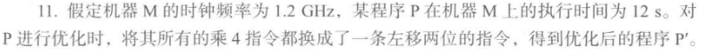
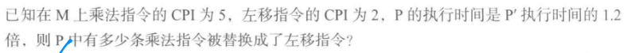
点击查看详细
\(\displaystyle 程序总时钟周期数=CPU执行时间×时钟频率=\sum（CPI_i×C_i）(i=1,..n)\)
设有 \(x\) 条乘法指令被替换，其他指令执行 \(y\) 个机器周期。
对程序P： \(5x + y = 12 * 1.2G\)
对程序P1： \(2x + y = 10 * 1.2G\)
解上述联立方程组，得： \(x =0.8G=800M\)
即：有800M条乘法指令被替换成左移指令。
12
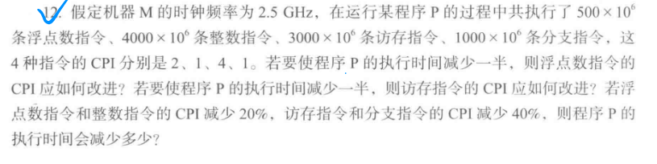
(1)计算程序P的原始执行时间
点击查看详细
\(\displaystyle T=\dfrac{\sum^n_{i=1}(指令数量_i\times CPI_i)}{时钟频率f}\)
\(f=2Hz\)
浮点数 \(I_{fp}=500\times 10^6,CPI_{fp}=2\)
整数 \(I_{int}=4000×10^6\) \(CPI_{int}=1\)
访存 \(I_{mem}=3000×10^6\) \(CPI_{mem}=4\)
分支 \(I_{br}=1000×10^6\) \(CPI_{br}=1\)
则程序P的原始执行时间 \(T1\) 为：
(2)若要使程序P的执行时间减少一半，求浮点数指令的CPI应如何改进
点击查看详细
设改进后浮点数指令的CPI为 \(CPI_{fp′}\)，此时执行时间 \(T2=\dfrac{T1}{2}=3600×10^6s\)。
由于CPI不能为负数，说明仅改进浮点数指令的CPI无法使程序执行时间减少一半
(3)若要使程序P的执行时间减少一半，求访存指令的CPI应如何改进
点击查看详细
设改进后访存指令的CPI为 \(CPI_{mem′}\)，此时执行时间 \(T2=\dfrac{T1}{2}=3600×10^6s\)
(4)若浮点数指令和整数指令的CPI减少20%，访存指令和分支指令的CPI减少40%，求程序P的执行时间会减少多少
点击查看详细
改进后浮点数指令的 \(CPI_{fp}^{′′}=2×(1−20\%)=1.6\)；
整数指令的 \(CPI_{int}^{′′}=1×(1−20\%)=0.8\)
访存指令的 CPI \(CPI_{mem}^{′′}=4×(1−40\%)=2.4\)；
分支指令的CPI \(CPIbr′′=1×(1−40\%)=0.6\)
减少的比例为
第二章
1. 给出以下概念的解释说明
- 真值
点击查看详细
机器数真正的值（带正负号的数）
- 机器数
点击查看详细
通常将数值计算数据在计算机内部编码表示的数称为机器数。机器数中只有0和1两种符号
- 数值数据
点击查看详细
指有确定的值的数据，在数轴上能找到对应的点，可以比较其大小
确定一个数据的值有三个要素：进位计数值、定/浮点表示和数的编码表示
- 非数值数据
点击查看详细
指在数轴上没有确定值得数据
比如逻辑数据、西文字符、汉字字符等
- 基数
点击查看详细
进位记数制的“底数”或“基”
例如，二进制数的基数是2；十进制的基数是10；十六进制的基数是16
- 无符号整数
点击查看详细
当一个编码的所有二进制都用来表示数值时，该编码表示的就是无符号证书，也成为无符号数，可以看成是正整数
常用于表示指针和地址
- 带符号整数
点击查看详细
在计算机内部对正、负号进行编码的整数，也成为有符号整数
- 定点数
点击查看详细
定点数是计算机中小数点固定在最左边或者最右边的数，有定点整数和定点小数两种
定点整数的小数点总是约定在数的最右边，主要用来表示现实世界中的整数和浮点数中的指数
定点小数的小数点总是约定在数的最左边，主要用来表示浮点数中的尾数
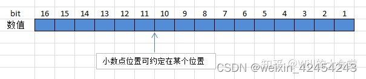
定点数的编码方式有原码、反码、补码和移码；浮点数的尾数一般用原码小数来表示；浮点数的指数一般用移码来表示；而反码很少被使用，只用在某些特殊场合
- 浮点数
点击查看详细
浮点数是计算中可以指定小数点在不同位置的数。任意一个浮点数F可以写成 \(F=M\times 2^E\) 的形式。
\(M\) 被称为浮点数的尾数，用一个定点小数来表示；
\(E\) 称为浮点数的指数或者阶码，用一个定点整数来表示
- 原码、反码、补码、移码
点击查看详细
原码：由符号位直接和数值位构成，正号用0表示，负号用1表示，数值部分不变；现代计算机中一般用来表示浮点数的尾数
反码：正数等同原码；负数则符号位不变，其它位对原码按位取反
补码：正数等同原码；负数则符号位不变，其它位为 \(反码+1\)
移码：补码基础上一种有符号数的编码方式，将所有数值偏移一个常量 k （偏置常数） \(移码=实际数值+偏移量k\)
假设偏置常数为127
实际值 移码值（二进制） 说明 -1 126 = 01111110 -1 + 127 = 126 0 127 = 01111111 0 + 127 = 127 1 128 = 10000000 1 + 127 = 128
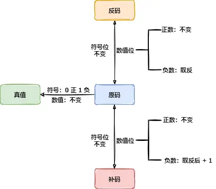
- 变形补码
点击查看详细
双符号位补码，又称为“模4-补码”。
双符号位可以用来检测定点整数是否发生溢出，左符号位为真正的符号位，右符号位用来判别是否溢出。
双符号位通常用于保存运算中进位到高位的数值部分
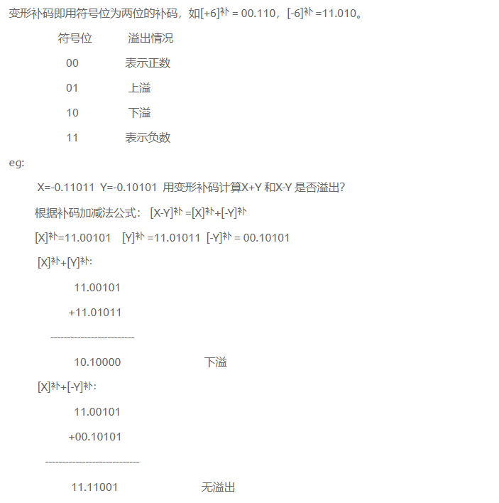
- 单/双精度浮点数
点击查看详细
IEEE 754标准规定的32/64位浮点数格式表示的浮点数
阶码用8/11位移码表示，偏置常数为127/1023，尾数用原码表示，规格化浮点数的最高位1隐含不显示，显示表示的尾数有23/52位，所以一共有24/53位尾数
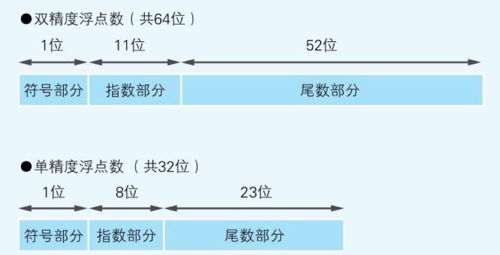
可以看此博客15 张图带你深入理解浮点数
- 机器零
点击查看详细
用一种专门的位序列表示机器0
IEEE 754 单精度浮点数中，用 \(0000\;0000\mathrm{H}\) 表示正零，\(8000\;0000\mathrm{H}\) 表示 \(-0\)
当运算结果出现阶码过小时，计算机将该数近似表示为机器零
- BCD码
点击查看详细
十进制数用二进制编码的形式表示称为BCD码
- ASCII码
点击查看详细
这个就省略了
- 机器字长
点击查看详细
一个二进制位（bit,比特）是计算机内部信息表示的最小单位。
机器字长指的是特定计算机中CPU用于定点整数运算的数据通路的宽度，通常也就是CPU内定点数运算器和通用寄存器的位数
- 编址单位
点击查看详细
对主存单元编号时，具有相同编号的二进位数，主存单元的编号称为地址。
1字节=1B=8bit
某机器字长x位，则 1字=x bit
- 字地址
点击查看详细
按字节编址时，一个字可能占用几个内存单元，字地址就是这几个连续内存单元地址的最小值
字编址是实现起来最容易的一种编址方式，这是因为每个编址单位与访问单位相一致，即每个编址单位所包含的信息量（二进制位数）与访问一次寄存器、主存所获得的信息量相同
- 最高/低有效位(MSB/LSB)
点击查看详细
一个二进制数中的最高/低位
1000中的1就是最高有效位；1110中的0就是最低有效位
- 最高/低有效地址（MSB/LSB)
点击查看详细
一个二进制数中的最高/低字节(8bit)
例如 \(1111\;1111\;0000\;0000\;1111\;0000\) 中的\(1111\;1111\)是最高有效地址
\(1111\;1111\;0000\;0000\;1111\;0000\) 中的 \(1111\;0000\) 是最低有效地址
- 大端方式（大端序）/小端方式（小端序）
点击查看详细
采用字节编址方式时，一个多字节数据将占用多个主存单元。
大端方式下，将数据字的最低有效字节放在大地址单元中，即字地址是最高有效字节所在单元的地址
小端方式下，将数据字的最低有效字节放在小地址单元中，即字地址是最低有效字节所在单元的地址
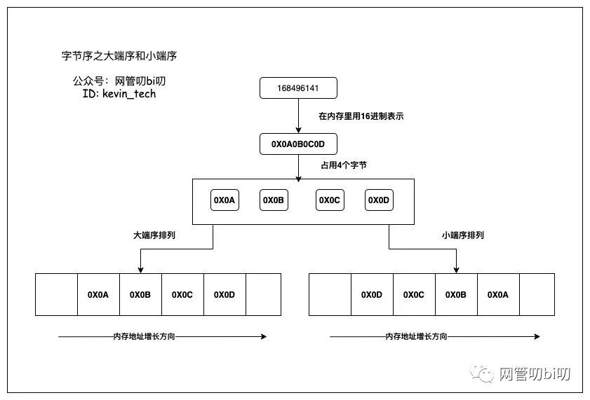
2. 简单回答下列问题
- 为什么计算机内部采用二进制表示信息？既然计算机内部所有信息都用二进制表示，为什么还要用十六进制或八进制数？
点击查看详细
计算机内部采用二进制表示信息，主要原因是：二进制的“0”和“1”可以直接对应电路的两种稳态，便于制造和控制；二进制的编码/计数/运算规则简单，便于逻辑门实现
二进制信息位数多，阅读、记忆不方便，而八、十六进制便于阅读、记忆和书写，因此引入了十六进制和八进制
- 常用的定点数编码方式有哪几种？通常它们各自用来表示什么信息？
点击查看详细
常用定点数编码方式有原码、反码、补码
原码主要用于理论研究；反码早期使用，现较少用；补码用于表示带符号整数。
- 为什么现代计算机中大多用补码表示带符号整数？
点击查看详细
统一加减法运算：在补码表示中，减法运算可以通过加法运算来实现。例如，计算 \(A−B\) 可以转化为\(A+(−B)\)，其中 \(−B\) 用补码表示。这样，计算机只需要设计加法电路，就可以完成加减法运算，简化了硬件设计。
消除零的二义性：在原码和反码表示中，零有两种表示形式（+0和 -0），这会给计算机的设计和运算带来一些麻烦。而在补码表示中，零只有一种表示形式（0000...0），避免了零的二义性。
扩大表示范围：以n位二进制数为例，原码和反码表示的范围是\(−(2^{n−1}−1)\) 到 \(2^{n−1}−1\) ，而补码表示的范围是\(−2^{n−1}\) 到\(2^{n−1}−1\)，补码可以多表示一个负数。
- 在浮点数的基数和总位数一定的情况下,浮点数的表示范围和精度分别由什么决定？两者如何相互制约？
点击查看详细
在浮点数基数和总位数一定时，表示范围由阶码位数决定，精度由尾数位数决定。
阶码位数增加，尾数位数减少，精度降低；尾数位数增加，阶码位数减少，表示范围变小。
- 为什么要对浮点数进行规格化？有哪两种规格化操作？
点击查看详细
进行规格化的原因：
- 提高精度：规格化可以使浮点数的尾数部分尽可能多地保留有效数字，从而提高浮点数的精度。例如，对于一个非规格化的浮点数 \(0.001×2^3\)，经过规格化后可以表示为 \(1.0×2^0\) ，尾数的有效数字得到了充分利用。
- 统一表示形式：规格化可以使浮点数具有统一的表示形式，便于计算机对浮点数进行处理和比较。
规格化的操作：
- 左规：当尾数的绝对值小于1时，需要将尾数左移，同时阶码相应地减1，直到尾数的绝对值大于等于1且小于基数。例如，对于浮点数 \(0.01\times 2^5\)，左规后得到 \(1.0\times 2^3\)
- 右规：当尾数的绝对值大于等于基数时，需要将尾数右移，同时阶码相应的加1。例如，对于浮点数 \(10.1\times 2^2\) ，右规后得到 \(1.01\times 2^3\)
- 为什么计算机处理汉字时会涉及不同的编码(如输入码、内码、字模码)？说明这些编码中哪些用二进制编码，哪些不用二进制编码。为什么？
点击查看详细
输入码：由于汉字数量众多，无法像英文字母那样直接通过键盘输入。输入码是为了方便用户通过键盘输入汉字而设计的编码方式，例如拼音输入法、五笔输入法等。不同的输入码可以满足不同用户的输入习惯。
内码：内码是计算机内部存储和处理汉字的编码。为了与ASCII码区分开来，汉字内码通常采用两个字节或更多字节来表示一个汉字。内码的统一可以保证汉字在计算机系统中的正确存储和处理。
字模码：字模码是用于显示和打印汉字的编码。它定义了汉字的字形信息，通常以点阵的形式存储。计算机根据字模码将汉字的字形显示在屏幕上或打印出来。
编码形式：输入码不一定用二进制编码，例如拼音输入法的输入码是拼音字母，它是基于人类的语言习惯设计的，方便用户输入。而内码和字模码都用二进制编码。这是因为计算机内部只能识别和处理二进制数据，内码用于在计算机内部存储和处理汉字信息，字模码用于在计算机的显示和打印设备上输出汉字字形，都需要以二进制形式进行存储和传输。
3. 实现下列各数的转换
4. 假定机器数为8位，写出下列各二进制数的原码表示
确定符号位 -> 确定数值部分 -> 数值部分为二进制数的数值部分，不足7位时右侧补零(小数)
| 二进制数 | 符号位 | 数值部分 | 原码 |
|---|---|---|---|
| +0.1001 | 0 | 1001 | 01001000 |
| -0.1001 | 1 | 1001 | 11001000 |
| +1.0 | 0 | 1 | 01000000 |
| -1.0 | 1 | 1 | 11000000 |
| +0.010100 | 0 | 010100 | 00101000 |
| -0.010100 | 1 | 010100 | 10101000 |
| +0 | 0 | 0 | 00000000 |
| -0 | 1 | 0 | 10000000 |
5. 假定机器数为8位，写出下列各二进制数的补码和移码表示
确定符号位 -> 确定数值部分 -> 数值部分为二进制数的数值部分，不足时在左侧补零（整数）
个人见解：移码其实就是 你现在的补码+k 就可以
| 二进制数 | 原码 | 补码 | 移码k=10000000 |
|---|---|---|---|
| +1001 | 0 0001001 | 0 0001001 | 1 0001001 |
| -1001 | 1 0001001 | 1 1110111 | 0 1110111 |
| +1 | 0 0000001 | 0 0000001 | 1 0000001 |
| -1 | 1 0000001 | 1 1111111 | 0 1111111 |
| +10100 | 0 0010100 | 0 0010100 | 1 0010100 |
| -10100 | 1 0010100 | 1 1101100 | 0 1101100 |
| +0 | 0 0000000 | 0 0000000 | 1 0000000 |
| -0 | 0 0000000 | 0 0000000 | 1 0000000 |
6. 已知 \([x]_补\) ，求x
(1)\([x]_补=1110\;0111\)
点击查看详细
首先，观察补码的符号位，最高位为 1，可知这是一个负数。
对于负数的补码求原码，方法是先对补码减 1 得到反码，再将反码各位取反得到原码。
- 补码减 1：\(11100111−1=11100110\)，此为反码。
- 反码各位取反：\(1001\;1001\)，加上符号位，原码为 \(10001\;1001\)，即 \(x=−00011001\)。
(2) \(x_{[补]}=10000\;0000\Rightarrow x=-1000\;0000\)
(3) \(x_{[补]}=0101\;0010\Rightarrow x=+0101\;0010\)
(4)\(x_{[补]}=1101\;0011\Rightarrow x=-0010\;1101\)
7. 假定一台32位字长的机器中带符号整数用补码表示，浮点数用IEEE 754标准表示，寄存器R1和R2的内容分别为R1：0000108BH，R2：8080108BH。不同指令对寄存器进行不同的操作，因而，不同指令执行时寄存器内容对应的真值不同。假定执行下列运算指令时，操作数为寄存器R1和R2的内容，则R1和R2中操作数的真值分别为多少？
\(R1= 0000\;108\mathrm{BH}=0000\;0000\;0000\;0000\;0001\;0000\;1000\;1011\mathrm{b}\)
\(R2= 8080\;108\mathrm{BH}=1000\;0000\;1000\;0000\;0001\;0000\;1000\;1011\mathrm{b}\)
(1)无符号数加法指令
点击查看详细
此时操作数视为无符号32位整数
R1：108BH, R2：8080108BH。
(2)带符号整数乘法指令
点击查看详细
操作数为补码表示的带符号整数
R1：最高位为0，表示正数，真值为 \(+\mathrm{0x}108\mathrm{B}\)
R2：最高位为1，表示负数，需要取反加1，\(\mathrm{-0x7F7FEF75}\)
(3)单精度浮点数减法指令
点击查看详细
操作数包含符号位、阶码、尾数
规格化相关可以看这篇文章
R1：
- 符号位：0 \(\rightarrow\) 正数
- 阶码： \(0000\;0000\rightarrow\) 非规格化数，指数为 \(-126\)
- 尾数：\(0000\;0000\;0010\;0001\;0001\;011\rightarrow\) 无隐含1，真值为 \(+0.002116\mathrm{H}\times 2^{-126}\)
R2：
- 符号位：1 \(\rightarrow\) 负数
- 阶码： \(0000\;0001\rightarrow\) 规格化数，指数为 \(1-127=-126\)
- 尾数：隐含1\(\rightarrow 1.0000\;0000\;0010\;0001\;0001\;011\)，真值为 \(-1.002116\mathrm{H}\times 2^{-126}\)
8. 假定机器 M 的字长为 32 位，用补码表示带符号整数。下表中第一列给出了在机器M中执行的C语言程序中的关系表达式，参照已有的内容完成表中后三栏内容的填写
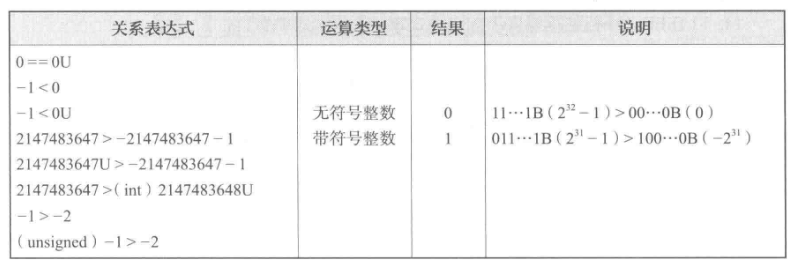
点击查看详细
| 关系表达式 | 运算类型 | 结果 | 说明 |
|---|---|---|---|
| 0 == 0U | 无符号整数 | 1 | |
| -1 < 0 | 有符号整数 | 1 | |
| -1 < 0 U | 无符号整数 | 0 | \(2^{32}-1\) 0 |
| 2147483647 -2147483647-1 | 有符号整数 | 1 | \(2^{31}-1 -2^{31}\) |
| 2147483647U -2147483647-1 | 无符号整数 | 0 | \(2^{31}-1<2^{31}\) |
| 2147483647<(int)2147483648U | 有符号整数 | 0 | \(2^{31}-1 -2^{31}\) |
| -1 > -2 | 有符号整数 | 1 | |
| (unsigned)-1 > -2 | 无符号整数 | 1 | \(2^{32}-1 2^{32}-2\) |
9. 在32位计算机中运行一个C语言程序，该程序出现了以下变量的初值，试写出它们对应的机器数
int x=-32768
点击查看详细
32位计算机中int为4字节，采用补码表示带符号整数
32768的二进制码 \(00000000\;00000000\;00000000\;10000000\)
转为补码 \(11111111\;11111111\;11111111\;10000000 \Rightarrow FFFF\;8000h\)
short y = 522
点击查看详细
short类型2字节，补码表示
522的二进制码 \(00000010\;00001010\Rightarrow 020Ah\)
unsigned z = 65530
点击查看详细
unsigned为32位无符号整数
\(65530=1111\;1111\;1111\;1010\) 然后扩展到32位，高位补零，得 \(00000000\;00000000\;11111111\;11111010\)
十六进制 \(0000FFFAh\)
char c='@'
点击查看详细
char通常为8位有符号整数，@的十进制为64
\(64=0100\;0000\)
十六进制 \(40h\)
float a = -1.1
点击查看详细
float为32位单精度浮点数，符号位1位，阶码8位（偏置127），尾数23位（隐藏整数位1）
\(-1.1=-1.0001\;1001\;1001\;1001\cdots\)，
规格化后尾数为\(0001\;1001\;1001\;1001\;1001\;100\) 阶码= \(127+0=127(0111\;1111)\)，符号位为1
机器数 \(1\;0111\;1111\;0001\;1001\;1001\;1001\;100\Rightarrow BFC3C3C3h\)
double b = 10.5
点击查看详细
double为64位双精度浮点数，符号位1位，阶码11位（偏置1023），尾数52位（隐藏整数位1）
10.5的二进制：\(1010.1=1.0101\times 2^3\)，阶码 \(=1023+3=1026(0100\;0000\;0010)\)，尾数位 \(0101000\dots0\)(52位)
机器数 \(0\;0100\;0000\;0010\;0101\;\dots0\Rightarrow 4025000000000000h\)
10. 在32位计算机中运行一个C语言程序，该程序中出现了一些变量，已知这些变量在某一时刻的机器数如下，写出对应的真值
和上一题差不多，直接写答案好了
- int x: FFFF 0006H
点击查看详细
32位机器，FFFF 0006H 在补码中表示的是负数，对应的原码是 0000 FFFAH，即 -6。
- short y: DFFCH
点击查看详细
16位有符号整数，DFFCH 在补码中表示的是负数，对应的原码是 2004H，即 -12。
- unsigned z: FFFF FFFAH
点击查看详细
32位无符号整数，FFFF FFFAH 表示的是4294967290。
- char c: 2AH
点击查看详细
8位有符号整数，2AH 在补码中表示的是正数，对应的原码是 2AH，即 42。
- float a: C448 0000H
点击查看详细
IEEE 754 单精度浮点数。C448 0000H 表示的是-36.0。
- double b: C024 8000 0000 0000H
点击查看详细
IEEE 754 双精度浮点数。C024 8000 0000 0000H 表示的是-36.5。
11. 以下给出的是一些字符串变量的机器码,请根据ASCII码定义写出对应的字符串.
差不多，多一个ASCII转义
- \(char*mystring1:68H\;65H\;6CH\;6CH\;6FH\;2CH\;77H\;6FH\;72H\;6CH\;6CH\;64H\;0AH\;00H\;\)
点击查看详细
Hello,world\n
- \(char*mystring2:77H\;65H\;20H\;61H\;72H\;65H\;20H\;68H\;61H\;70H\;70H\;79H\;21H\;00H\)
点击查看详细
we are happy!
12.以下给出的是一些字符串变量的初值 请写出对应的机器码。
同上
char * my string1=". /myfile "
点击查看详细
2CH 2FH 6DH 79H 66H 69H 6CH 20H 00H
char *mystring2 = "OK,GOOD "
点击查看详细
4FH 4BH 2CH 47H 4FH 4FH 44H 20H 00H
13. 下列几种情况能表示的数的范围
- 16位无符号整数
点击查看详细
\(0\sim2^{16}-1\)
- 16位原码定点小数
点击查看详细
\(-(1-2^{-15})\sim +(1-2^{-15})\)
- 16位补码定点小数
点击查看详细
\(-1\sim +(1-2^{-15})\)
- 16位补码定点整数
点击查看详细
补码整数范围为 \(−2^{n−1}\) 到 \(2^{n−1}\)
\(-2^{15}\sim2^{15}-1\)
- 浮点数
点击查看详细
阶码范围：8位移码，偏置\(128\)，阶码值为\(−128\) 到 \(+127\)。
尾数范围：7位原码，最大值\(1−2^{−7}\)，最小值 \(2^{−7}\)。
最大正数：\((1−2^{−7})×2^{127}\)。
最小正数：\(2^{−7}×2^{−128}=2^{−135}\)。
最大负数：\(−(1−2^{−7})×2^{127}\)。
最小负数：\(−2^{−7}×2^{−128}=−2^{−135}\)。
14. 以IEEE 754单精度浮点数格式表示下列十进制数。
- 步骤 1：将十进制数转换为二进制数；将十进制数转换为二进制数，包括整数部分和小数部分。
- 步骤 2：规范化二进制数；将二进制数规范化为1.xxxxxx的形式，其中x是二进制位。
- 步骤 3：确定阶码和尾数；阶码为规范化后的二进制数的指数加上偏移量127；尾数为规范化后的二进制数的小数部分。
- 步骤 4：确定符号位；符号位为0表示正数，1表示负数。
- 步骤 5：组合符号位、阶码和尾数；将符号位、阶码和尾数组合成IEEE 754单精度浮点数格式。
-
步骤 6：转换为十六进制表示将组合后的二进制数转换为十六进制表示。
-
+1.75
点击查看详细
\(+1.75=+1.11B\times 2^0\)
阶码0+127=0111 1111B, 符号位为0，尾数为 1.110…0，小数前为隐藏位，所以
\(0\;0111~1111\;1100~0000~0000~0000~0000~000\Rightarrow 3FE00000\mathrm{H}\)
- +19
点击查看详细
0 10000011 001 1000 0000 0000 0000 0000 \(\Rightarrow\) 41980000H
- -⅛
点击查看详细
1 01111100 000 0000 0000 0000 0000 0000 \(\Rightarrow\) BE000000H
- 258
点击查看详细
0 10000111 000 0001 0000 0000 0000 0000 \(\Rightarrow\) 44280000H
15. 设一个变量的值为 4098，要求分别用 32 位补码整数和 IEEE 754 标准单精度浮点数格式表示该变量（结果用十六进制形式表示），并说明哪段二进制位序列在两种表示中完全相同，为什么会相同？
点击查看详细
2049＝1000 0000 0001B＝＋1.000 0000 0001B×2¹¹
用32位补码整数表示为0000 0000 0000 0000 0000 1**000 0000 0001**，用十六进制形式表示为0000 0801H；
IEEE 754单精度浮点数表示时，符号s＝0，阶码e＝11＋127＝10001010B，尾数的小数部分f＝0.0000 0000 0001B，因此，2049用IEEE 754单精度浮点数格式表示为0 100 01010 0 000 0000 0001 0000 0000 0000，用十六进制形式表示为4500 1000H。
在上述两种表示中，存在相同的二进制序列000 0000 0001。因为2049被转换为规格化浮点数后，有效数值部分中最前面的1被隐藏，其余数值部分为000 0000 0001，而2049的32位补码整数表示中保留了完整的有效数值部分，即最前面的1没有被隐藏，所以除了这个1之外，后面的二进制序列000 0000 0001是相同的
16. 设一个变量的值为–2147483647，要求分别用32位补码整数和IEEE754单精度浮点格式表示该变量（结果用十六进制表示），并说明哪种表示其值完全精确，哪种表示的是近似值。
点击查看详细
–2147483647 = –111 1111 1111 1111 1111 1111 1111 1111B= –1.11 1111 1111 1111 1111 1111 1111 1111 × \(2^{30}\)
补码形式为：1000 0000 0000 0000 0000 0000 0000 0001 （80000001H）
IEEE 754单精度格式为：1 10011101 1111 1111 1111 1111 1111 111 （CEFFFFFFH）
补码形式能表示精确的值，而浮点数表示的是近似值，低位被截断
17. 下表为IEEE 754浮点格式表示中一些重要的非负数的取值，表中已经有最大规格化数的相应内容，要求填入其它浮点数格式的相应内容
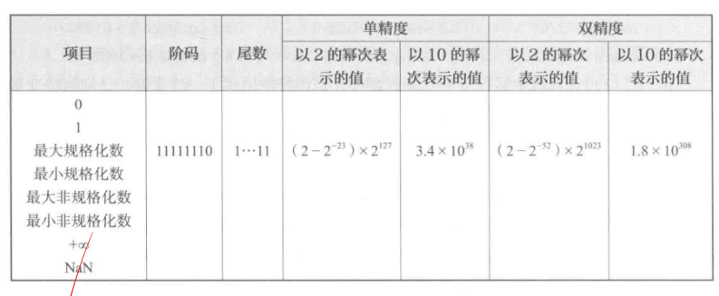
点击查看详细
-
规格化数：阶码不全 0 或全 1，尾数隐含最高位 1；
-
非规格化数：阶码全 0，尾数无隐含位；
-
零：阶码全 0，尾数全 0；
-
NaN：阶码全 1，尾数非全 0。
- 最小规格化数
- 阶码：单精度为 \(00000001\)（最小非零阶码），双精度为 \(00000000001\)；
- 尾数：全 0；
-
值：\(1.0 \times 2^{-126}\)（单精度），\(1.0 \times 2^{-1022}\)（双精度）。
-
最大规格化数
- 阶码：全 0；
- 尾数：全 1；
-
值：\((1 - 2^{-23}) \times 2^{-126}\)（单精度），\((1 - 2^{-52}) \times 2^{-1022}\)（双精度）。
-
最小非规格化数
- 阶码：全 0；
- 尾数：仅最低位为 1；
-
值：\(2^{-23} \times 2^{-126} = 2^{-149}\)（单精度），\(2^{-52} \times 2^{-1022} = 2^{-1074}\)（双精度）。
-
\(+0\)
- 阶码：全 0
- 尾数：全 0；
-
值：0。
-
NaN
- 阶码：全 1；
- 尾数：非全 0；
- 值：无意义（用“—”表示）。
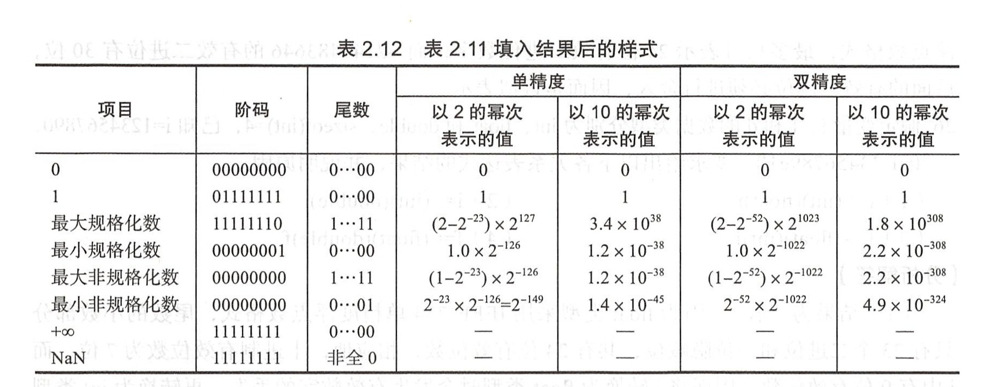
18. 假定在一个程序中定义了变量x、y和i，其中，x和y是float型变量（用IEEE754单精度浮点数表示），i是16位short型变量（用补码表示）。程序执行到某一时刻，x = –0.125、y=7.5、i=100，它们都被写到了主存（按字节编址），其地址分别是100，108和112。请分别画出在大端机器和小端机器上变量x、y和i在内存的存放位置。
点击查看详细
步骤 1：确定变量x、y和i的机器数表示
\(x = –0.125 = –0.001B = –1.0 × 2^{-3}\)
x的IEEE754单精度浮点数表示为：1 01111100 00…0 (BE00 0000H)
\(y = 7.5 = 111.1B = 1.111 × 2^2\)
y的IEEE754单精度浮点数表示为：0 10000001 11100000000000000000000 (41E8 0000H)
i = 100
i的16位short型变量补码表示为：00000000 01100100 (0064H)
步骤 2：确定大端机器和小端机器的内存存放位置
- 大端机器：高位字节存放在低地址，低位字节存放在高地址。
- 小端机器：低位字节存放在低地址，高位字节存放在高地址。
步骤 3：根据大端和小端机器的内存存放规则，确定变量x、y和i在内存的存放位置
大端机器：
- x的地址100：BE 00 00 00
- y的地址108：41 E8 00 00
- i的地址112：00 64
小端机器：
- x的地址100：00 00 00 BE
- y的地址108：00 00 E8 41
- i的地址112：64 00